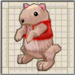
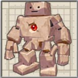
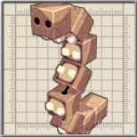

出現する敵に「しろおこじょ」がおり、この部屋がプラチナメダルを取るための初めの難所となります。

初めは「あーす」2 体ですが、一定時間経つとさらに「こぼると」が4 体出現します。
出現する敵の内訳は「ごーれむ」と「いわつつき」が2 体です。
目次 > ゲームについて > 日本Falcom 攻略 > ZWEI II > ダンジョン一覧 > ゴーレム工房(LV.4)
らんの眼
ZWEI II (ツヴァイ 2、ZWEI II Plus)
| 概要 | 情報 | 攻略チャート |
| フード交換 | ペットについて | ボス戦 |
| 敵キャラ一覧 | ハンターランク | G-コロッセオ |
| アイテム一覧 | ガジェット一覧 | トレジャー一覧 |
| ダンジョン一覧 | クリアデータ特典 | Plusの追加要素 |
| ZWEI II攻略へ | 目次へ戻る |
| 第1 階層 |
|  | A 地点の部屋に入ると、扉が閉まり敵が出現します。 出現する敵に「しろおこじょ」がおり、この部屋がプラチナメダルを取るための初めの難所となります。 |
|
B 地点の部屋に入ると、扉が閉まり敵が出現します。 初めは「あーす」2 体ですが、一定時間経つとさらに「こぼると」が4 体出現します。 |
|  | C 地点の部屋に入ると、扉が閉まり敵が出現します。 出現する敵の内訳は「ごーれむ」と「いわつつき」が2 体です。 |
|  | E 地点の部屋に入ると、泥沼の中に「はこむかで」が出現します。 |
| 第2 階層 |
| A 地点の3 つの宝箱のどれかを開けると、宝箱から「べびーごーれむ」がそれぞれ4 体ずつ出現します。 全ての「べびーごーれむ」を倒すと、A' の扉が開きます。 プラチナメダルを目指す場合、宝箱を開けずに側にある壷だけ壊すのも手です。 |
|
| B 地点の岩を「爆弾」で壊すと、上から岩が降ってきます。これに触れるとダメージを受けるので注意してください。 ただし、「アンチトラップ」を装備していれば、ダメージを受けません。 |
|
| C 地点の赤い樽を破壊すると中から着火した爆弾がいくつも出てくるので注意してください。 |
| 第3 階層 |
| A 地点の「ごーれむ」を倒すと、A' 地点の扉が開きます。 | |
 |
B 地点のブロックは「フックギア」を使うことで動かすことができます。 |
| C 地点には地中に埋まった「ごーれむ」がいます。この場所を調べるごとに敵が出現し、全ての敵を倒すと宝箱が出てきます出現します。 | |
| D 地点、D' 地点のブロックは破壊すると中から敵が出てきます。D' 地点は特にすごいです。 |
| 概要 | 情報 | 攻略チャート |
| フード交換 | ペットについて | ボス戦 |
| 敵キャラ一覧 | ハンターランク | G-コロッセオ |
| アイテム一覧 | ガジェット一覧 | トレジャー一覧 |
| ダンジョン一覧 | クリアデータ特典 | Plusの追加要素 |
| ページの上部へ | ZWEI II 攻略へ | 目次へ戻る |